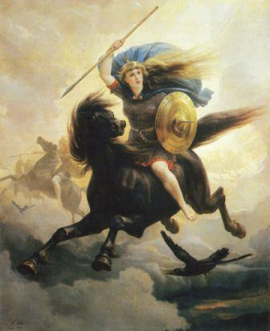
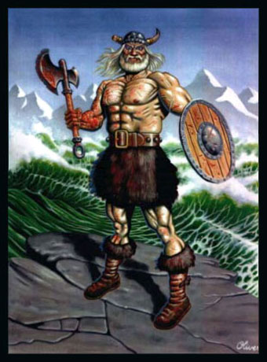

Скандинавската митология
обхваща предхристиянската религия, вярата и легендите на скандинавците,
както и на викингите, които се заселват в Исландия. Важно е да се отбележи, че финландците имат
самостоятелна система от вярвания (виж. Финска митология), въпреки че между двете митология има
много общи моменти. Скандинавската митология представлява и най-добре запазената версия на старата
митология на германите като включва и Англо-саксонската митология. Митологията на германите сама
по себе си е развита от ранна Индоевропейска митология.
Валкирия

Скандинавската митология представлява колекция от убежденията и историите, разпространени сред
северните германски племена. Тя не представлява истинска религия, тъй като не се смята за истина
пратена от боговете и не разполага с една или повече свещени книги. Разпространявала се е предимно
устно, под формата на дълги стихове. Устното разпространение на легендите продължава до епохата на
викингите. Почти цялата информация за скандинавската митология, с която разполагаме идва от
средновековни текстове, написани по време или след християнизацията на тези земи.
Викинг

В скандинавския фолклор някои от убежденията, присъстващи в скандинавската митология, се запазват
непроменени много дълго време. Някои от традициите са част от фолклора на местното население и в
наши дни. Други части от митологията на скандинавците впоследствие се е възродила или се е изменила
под формата на германски неопаганизъм. Скандинавската митология се превръща в основна тема в немалко
съвременни литературни произведения, както и във филмови или театрални продукции.